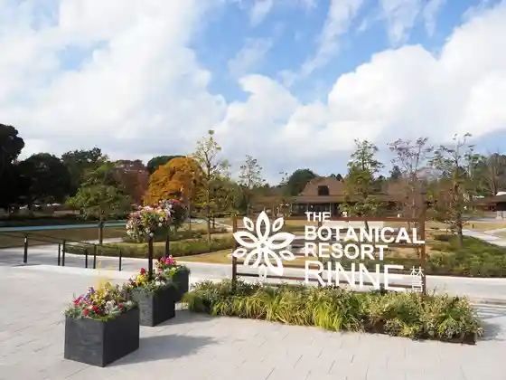
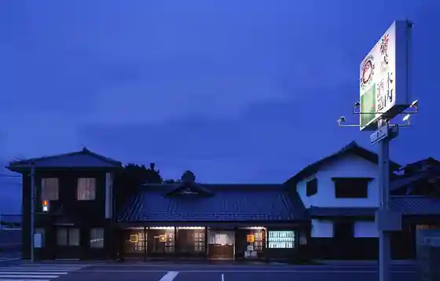
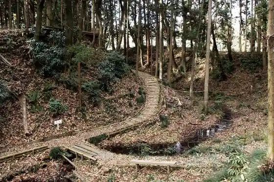
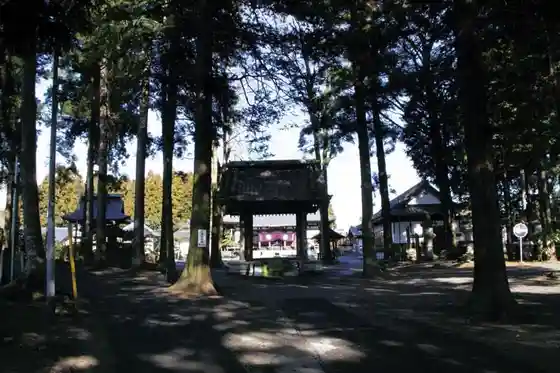

THE BOTANICAL RESORT Hayashi Oto (Rinne)
Nakashi, Ibaraki · 029-212-6661 · Official / source link

Kiuchi Shuzo
Nakashi, Ibaraki · 029-270-7955 · Official / source link

Sei Mine Furusato Park
Nakashi, Ibaraki · 029-298-1111 · Official / source link
Nukata Castle Ruins
Nakashi, Ibaraki · 029-298-1111 · Official / source link

Urizura Castle Ruins
Nakashi, Ibaraki · 029-298-1111 · Official / source link

Hitachi Ni no Miya Sei Shrine
Nakashi, Ibaraki · 029-296-0029 · Official / source link
National Kenkyukaihatsu Hojin Ryoshi Kagakugijutsu Kenkyukaihatsukiko Nakashi Fuyujon Kagakugijutsu Kenkyusho
Nakashi, Ibaraki · 029-270-7213 · Official / source link
Tonkatsu Hitosuji Katsu Kichi
Nakashi, Ibaraki · 029-298-0149 · Official / source link
JA Hitachi Nakashi Chokubai Tokoro
Nakashi, Ibaraki · 029-298-2677 · Official / source link
Amida Tera
Nakashi, Ibaraki · 029-298-7505 · Official / source link
Kotoku Numa
Nakashi, Ibaraki · 029-298-1111 · Official / source link
Ichi no Kan Tame Ike
Nakashi, Ibaraki · 029-298-1111 · Official / source link
Nakazato Tameike
Nakashi, Ibaraki · 029-298-1111 · Official / source link
Nakashi Folk History Museum
Nakashi, Ibaraki · 029-297-0080 · Official / source link
Fuji Sho
Nakashi, Ibaraki · 029-295-0473 · Official / source link
Te Tsukuri Tsukemono Wa no Kura
Nakashi, Ibaraki · 029-295-8377 · Official / source link
Mishima Shrine
Nakashi, Ibaraki · 029-295-1148 · Official / source link
Kura + Soba Na Ka Ya
Nakashi, Ibaraki · 029-270-7955 · Official / source link
Yoshino Chokubai Tokoro Mae Bun Hora Tameike
Nakashi, Ibaraki · 029-298-1111 · Official / source link